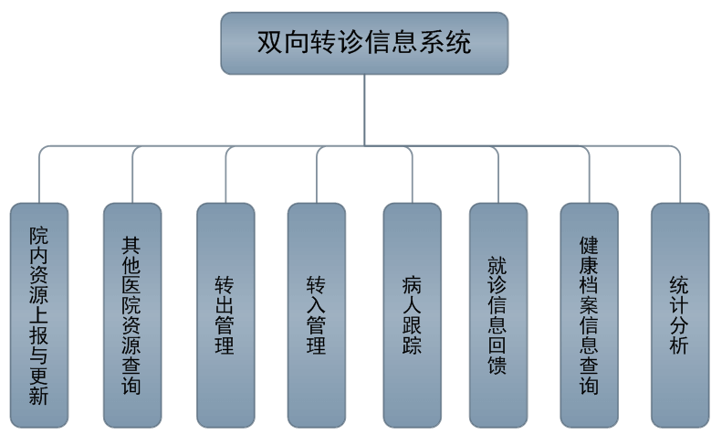

为加强建设基层首诊、分级诊疗、急慢分治、上下联动、资源共享、疾病诊治连续化管理的分级诊疗模式，最终实现小病在社区，大病进医院，康复回社区的就医格局。
借助蓝创科技“双向转诊管理系统”，建设区域内统一的双向转诊信息系统，为区域内分级诊疗体系建设提供信息化保障。
系统功能架构
系统功能根据基层医疗机构、医院和卫生行政主管部门三类业务角色进行设计实现，包括基础资源同步、双向转诊全流程管理、居民个人健康档案查询调阅以及相关统计分析功能。

业务流程
双向转诊从社区卫生服务中心/站（或乡镇卫生院、村卫生室）开始。对于一般患者，社区通过电话、网络与医院双向转诊办公室联系后由患者自行前往即可，部分需住院患者可经社区直接联系医院住院部。而对于危急重症患者，社区需派专人护送。患者到达医院双向转诊办公室后由转诊办公室人员安排就诊，患者在就诊中享受双向转诊的相关优惠政策，如两免四减一优先（免收挂号费、诊查费；减免住院床位费、减免物理检查费、减免化验检查费、减免治疗费；优先就诊）；患者在医院就诊后按照具体情况进行处理：

上转流程
患者根据病情需要可从社区上转到医院进行治疗。社区卫生服务中心/站首先完善患者电子健康档案等转诊信息，将转诊信息导入市级数据中心转诊业务数据库中，并生成转诊标识，同时向医院进行网上请求和预约时间/ 科室/ 专家； 医院从转诊业务数据库中导出患者转诊信息，进行相应安排后通过网络/电话对社区的请求进行回复并告知时间/科室/专家；患者则持转诊标识到医院双向转诊办公室，由该办公室安排就诊事宜（如专家看诊、检查、会诊、住院、转院、出院等）；最后病人在医院产生的电子病历信息（如检查结果、会诊意见、健康指导等）导入转诊业务数据库。
下转流程
患者在医院进行治疗病情稳定后，根据需要可回社区进行康复治疗。医院双向转诊办公室首先将患者电子病历等转诊信息导入转诊业务数据库中，同时通过网络/电话告知社区患者下转事宜；社区则从转诊业务数据库中导出患者电子病历等转诊信息，待患者持转诊标识回社区后安排康复治疗；最后社区将患者在社区进行康复治疗产生的数据导入转诊业务数据库中，并对患者整个就诊过程产生信息进行归档。
平转流程
患者在治疗过程中会有在综合医院与专科医院之间进行转诊的可能，因此系统支持此类平转流程，综合医院和转科医院均可以为转诊发起方或接收方。提供医院与基层社区卫生服务中心之间的病人、病历信息的“双向转诊”和信息共享的信息化系统。
系统操作界面
待转入患者列表
患者转入管理
患者转入处理
自动生成患者转院手续存根
患者转出管理
患者转回管理
患者转院详细信息查询
转入患者跟踪
转出患者跟踪
系统转诊配置管理
转诊情况统计分析
产品价值
1. 借助蓝创科技“双向转诊系统”，可以实现区域范围内医疗卫生资源和居民健康信息共享，满足医疗机构上下级分级诊疗的业务需求；
2. 满足卫生行政管理部门对分级诊疗业务开展情况的监管和统计分析需求；
3. 满足医保部门对分级诊疗业务的支付保障需求；
4. 最终实现患者小病在社区，大病进医院，康复回社区的分级诊疗就医新格局！
典型案例
-项目背景
新疆沙湾县人民医院是一所县级综合性二级甲等医院，医院设有29个临床医技科室和10个职能部门，在县卫计局和人民医院的共同设计和规划下，开展了县域医联体平台的建设。
-应用效果
过医联体平台的实施，实现了沙湾县人民医院与基层12个乡镇卫生院之间的远程会诊和双向转诊业务，既发挥了县人民医院专业技术优势及带头作用，提升了其知名度和影响力，又帮扶和提升了当地基层医疗机构的医疗服务水平，让老百姓真正享受到了“小病在社区、大病去医院、康复回社区”的分级诊疗制度。